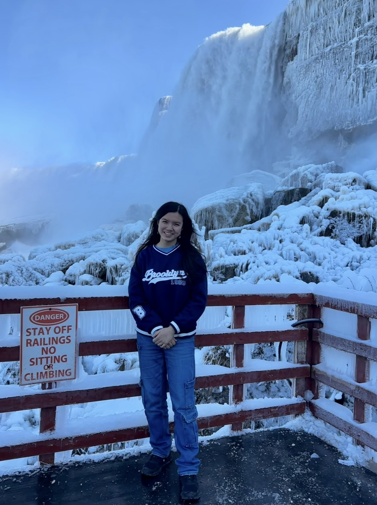

My Background
I grew up in New Jersey before moving to Hong Kong for a couple of years and then returning to the U.S. to complete high school. My unconventional education has given me a unique perspective that influences how I approach both academic work and creative projects. I learned how to adapt to change and embrace new experiences, which continues to shape my outlook today. I have always wanted to bring together my creativity and my interest in STEM, and data science feels like the best way for me to do that.
Looking Forward
As someone who enjoys diving deep into projects and working on teams, I am excited to pursue opportunities at the intersection of consulting and tech. I hope that my learning and the work that I do will drive positive change, whether through business, data science, or music.
Thanks for stopping by!
